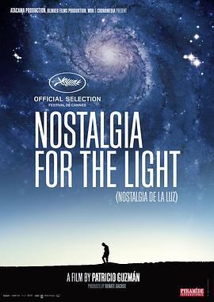

故乡之光 / Nostalgia de la luz
又名：星空尘土(台) / 怀念星光 / 渴望光明 / 光之乡愁 / 惆怅星光 / Nostalgie de la lumière / Nostalgia for the Light
作品信息
| 导演 | 帕特里西奥·古斯曼 |
| 编剧 | 帕特里西奥·古斯曼 |
| 主演 | Gaspar Galaz / Lautaro Núñez / Luís Henríquez / Miguel Lawner / Victor González / Vicky Saaveda |
| 类型 | 剧情 / 纪录片 |
| 制片国家/地区 | 法国 / 德国 / 智利 / 西班牙 |
| 语言 | 西班牙语 / 英语 |
| 上映日期 | 2010-05-14(戛纳电影节) / 2010-10-27(法国) |
| 片长 | 90分钟(法国) |
| IMDb | tt1556190 |
最后一次看到是 2026-08-01T11:09:16+10:00 · 豆瓣原页